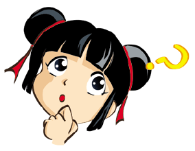

我的生活三：疑问
- 老师，在任意一个css里边设置tooltip就可以随便用吗？？？我发觉啊！
- 偶像，我想让我的缩略图显示名称，看起来似乎有个caption属性，可我怎么也捣鼓不出来。。。
- 在设置阴影之类的特效时，需要针对不同浏览器设置不同css吗？比如什么.boxshadow{-mox-box-shadow:#88888888 4px……；-webkit-box-shadow:#888888 4px……；box-shadow:#888888 44px……；filter:progid:DXImageTransform.Microsoft.Shadow(color="#888888",Direction=135,Strength=6);}
- 书上那些比些lightestshadow~lightshadow……这些都仅仅是某种功能需要表达的代表名还是真的有啥功能哪？学生我认为有那功能还是有可能的，是吗？我试了试，有的可以，有的不可以，唉，神经错乱，FT!
- eg:text-transform:capitalize;font-variant:small-caps;这俩啥子功能哪，有嘛区别呢？
- 真的可以和网上的东东联系起来吗？？？好好奇啊，比如咱可以在线使用网上的google字体（只要联网）？
- 如何实现真正的导航呢？不是说加几个木头疙瘩放在那，一点就连接到别的网页上，而是真正一张网页，鼠标悬停在哪里它就显示它的内容～这么简单的想法怎么实现呢？能实现吗？
- 悲哀，对于缩略图，我还在努力，不知道到30号的时候还会不会有收获。。我的目的很简单，就想给大家给您做一个相册，实现资源共享
- 咱表格可以加标题，那li /li 这能加标题吗？对了，我怎么不能直接引用加上尖括号的li，她老自己识别成拥有功能的符号。真讨厌。
- 偶像啊，我想做一张网页可以在线打分。那么我就可以第一手知道您的心情啦**
- 我有最大的疑问，偶像你怎么不喜欢QQ呢，里边那么多牛人～不得其解@@当你有可以仰望的人的时候，才会有更大的进步空间。
- p标签 段落的文本是自动缩进的吗？想多缩好办，多加空格(这也是笨办法),那如果不想缩进怎么减去空格呢？还有要想显示html默认的那些标签名字之类的那些文字，如何输入？譬如我刚才的p标签加上尖括号就被识别为代码。
- 关于特殊符号，如何输入，若设它为导航，按下状态怎么实现？
- before after 有这代码吗？实现什么呢？quote:before/after{content：“\201c”;}其中的“\201c”又是哈子东西
- filter是过滤吧。。过滤是什么概念呢？opacity:5; ?filter:alpha(opacity="50");
- 溢出又是什么概念呢？eg.overflow
- 偶像！注释到底怎么弄呢？< !……………………!>还是/*……………………*/呢？
- fixed是嘛玩意儿？还和gravity有关？
- display:block;是哪种砖头？
- 子对象？
- reset和default意义与区别。
- dw中，听说通常用用表格布局，那之后表格还能隐藏吗？
- 路径什么概念？ps老师也没讲清楚。。相对？绝对？
- 偶像纳。。那天睡着了也许。。插画网站是干什么的呀
- 唉，书上总是模棱两可，我也丈二和尚了～咱html里边要是加个class＝，那名称要用单引号引呢，还是双引号啊？别嘲笑我智商低啊。。。
- leftmargin()和margin-left 能实现相同效果吗？还是说有一个是赝品？
- groove是哈子线呢?
- 偶像啊，表示颜色为什么有时是＃三位，有时候有＃六位？FT
- 属性检查器/属性选择器是哈子呢？笔者虽没用dw做，但也把书吃了个透，纸上谈兵，想不透这个。
- text-transform和font-variant区别？
- 偶像，碉堡上天了。。。margin还能设负值。。。
- dashed?
- column-count:2;是被分为几栏？还是就没用这条css，我试不出来。
- noscript 没脚本？这汉语我也不懂。
- id="blue"是直接设置了颜色还是仅仅给需设置的东东设了个id名字，而已？
- 为什么说div的宽度是无限的～至少对于浏览器边界来说
- 1em有多大？em职位这么多啊？
- 字体变细？text-decoration:blink？？？
- capitalize??
- 偶像，是不是网站里边有它自己的颜色单词呢？就比如那个maroon
- color,background-color和background是不是可以实现相同功能呢？
- position是哪种属性呢？
- 序列号？索引号？别嘲笑我都念了这么多年书还不懂这俩名词。偶像，其实我真不懂。
- 插件是什么？～虽然也许我也经常用～
- 偶像，怎样在html或css中直接设置背景渐变呢？
- opera是浏览器？？？我第一次听说。。从来都以为是京剧。。
- 从开始就想设个顶部停靠栏或右部停靠按钮，抄袭抄袭人家大型网站上上档次，技术却依旧在灯火阑珊处。。
- 偶像，我们可以专门开辟一个css来输入样式代码，看到我这html我不得不问句，有没有专门输入文字的text-css呢？难道html就是最好选择？
- >当插入某些图片不显示内容的时候，在网页里边怎么会自己乱动呢？不要说是病毒影响啊。。
- 偶像？我想实现一种幼稚女生喜欢的效果。。怎样能围着我不规则的区域添加图片边框呢？在下几张网页中你会读懂我的意思。
- 偶像？我怎么连接不到具体的网页上某张图片上呢？本想让您看下我做的过程的无奈的效果呢，唉,,,
- 我做表格部分空白单元格背景的时候怎么反应的不是我想要的呢？刷新后它把单元格边框都吃了，独流一片空白。要不是这个偶像太多，我也不愿去打扰到这个dw，您说的对，真心垃圾啊。。。
- l偶像？怎么alt标记还能当提示工具来用？而且还是抛开了咱吸收的那些知识，另外出来的？
- 为什么margin不管用呢，呜呜……所以只能使用空格把我所需要的向右移动了，唉。。
- 做完这一切返回做红灯笼，还是有些难度的，我不想嚼老师的那些蜡，可是。。。最后即便嚼了几口也无味道可言。老师您能帮我看下为什么整个不能居中对齐啊。。。
唉，排版果真是硬伤。伤shi了，红灯笼原来直接用title标记就能实现工具提示！我了个去啊。。我本以为我自己找到的牛叉方法。。
- 做到最后，没想到我也能这样自顶向下，逐步求精～呵呵～
- 老师，就这样就这样就这样就要离开您了吗？我们舍不得您啊，偶像！我的疑问再由谁解，我的牛角尖再能往往里触碰啊！！！真想唱首哭吧哭吧不是罪
偶像，你怎么看？？？